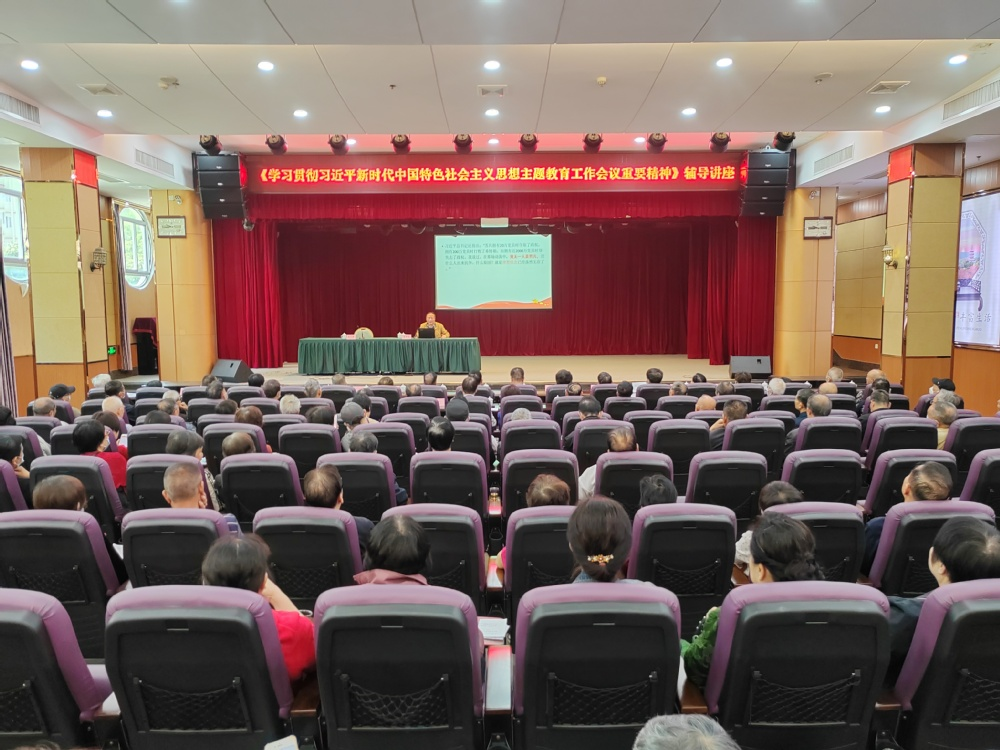
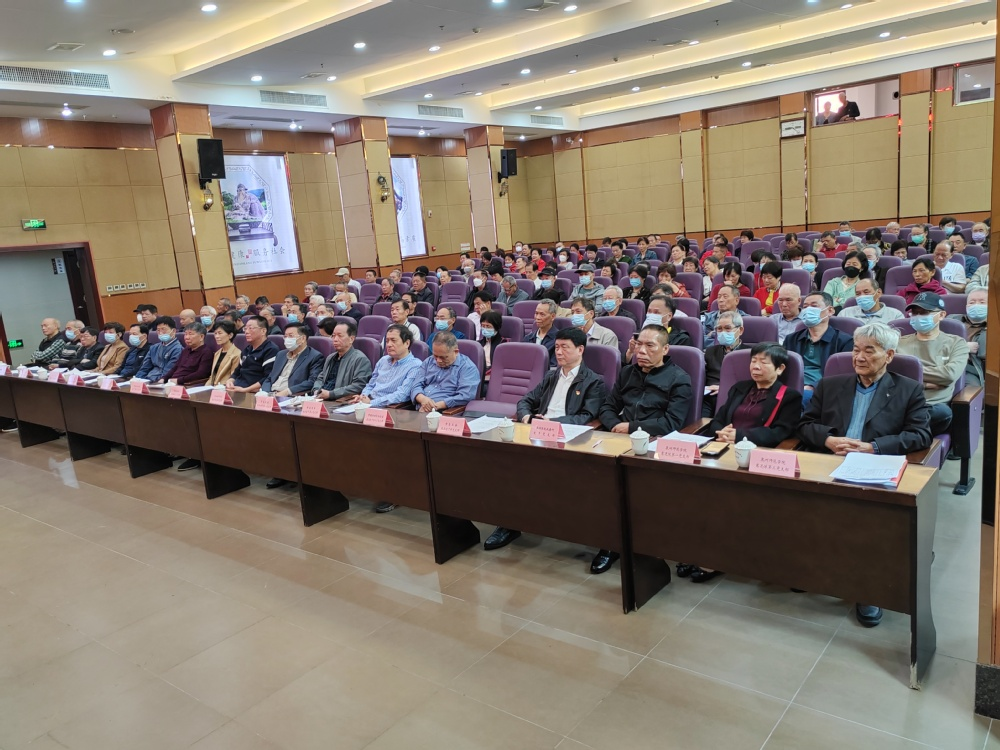
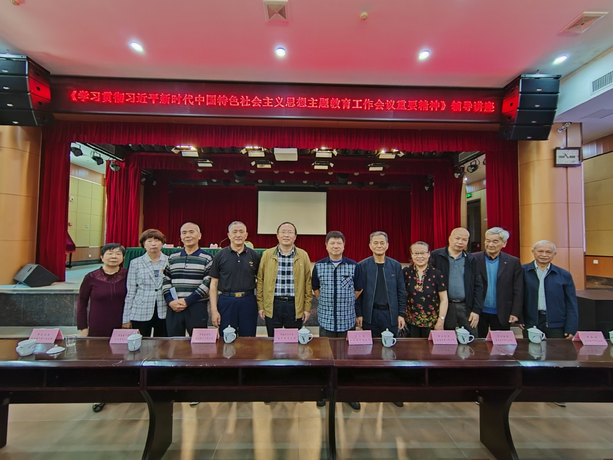

新闻动态
首页
新闻动态
离退休党委组织参加学习贯彻习近平新时代中国特色社会主义思想主题教育工作会议重要精神辅导讲座
4月27日上午，离退休党委组织13位退休党员参加中共泉州市委离退休干部工作委员会等单位主办的学习贯彻习近平新时代中国特色社会主义思想主题教育工作会议重要精神辅导讲座，该讲座由福建省理论宣讲专家库成员、中共泉州市委讲师团理论教育室主任蔡军青教授讲授，辅导讲座在泉州市老年活动中心举行。

蔡军青从深刻理解在全党深入开展学习贯彻习近平新时代中国特色社会主义思想主题教育的重要意义、准确理解和把握主题教育的总要求和根本任务、深刻领会习近平新时代中国特色社会主义思想开辟了马克思主义中国化时代化新境界、切实用习近平新时代中国特色社会主义思想武装头脑、指导实践、推动工作等四个方面阐述了学习贯彻习近平新时代中国特色社会主义思想主题教育工作会议精神的重要性。


通过此次辅导讲座，离退休党员纷纷表示，要牢牢把握“学思想、强党性、重实践、建新功”总要求，认真学习贯彻习近平总书记重要讲话精神和党中央部署，推动主题教育扎实开展。（离退休党委、校退教协）